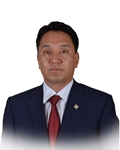

Member of the State Great Khural of Mongolia
Ganbaatar Jambal
Member of the State Great Khural of Mongolia GANBAATAR Jambal
Mongolian People's Party
Education, graduated schools, education degree:
1981 - 1991 Secondary School, Nalaikh City
1991 - 1995 Economist, University of Trade and Industry
1997 - 2000 Lawyer, School of Law, National University of Mongolia
Working experience:
1996 - 2015 Advisor, Director General of the “Orgil” Commercial Center
2004 - 2012 Advisor, Governor's Council, Bayangol District, Ulaanbaatar City
2008 - 2012 Member and Presidium member, Ulaanbaatar Citizens' Representatives Hural
2016 Member of the State Great Hural (Parliament) of Mongolia
Awards:
2012 Order of “Polar Star”
Foreign language knowledge:
English; Russian